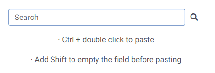

Bem-vindo ao Copy on Select!
IMPORTANTE: recarregue o Chrome para ativar a extensão!
CAVEATS
A extensão não funciona em:
- páginas cujo URL começa com a palavra "chrome", por exemplo, chrome://extensions/ ou chrome://settings/. Esse é o comportamento padrão para todas as extensões.
- a página Nova guia (a página que é aberta quando você clica no sinal + no Chrome). Como mencionado acima, esse é o padrão para todas as extensões do Chrome.
- a barra de endereços do navegador (porque está localizada fora da janela de navegação).
COPIAR

- Selecione um texto e ele será copiado automaticamente.
- Para cancelar o recurso, mantenha pressionada a tecla Ctrl (Command no Mac) enquanto estiver selecionando o texto.
- Um breve aviso "Copiado!" será exibido toda vez que uma nova seleção for feita. O aviso pode ser desativado na seção Opções.
COLAR
Método 1: usando o botão central.

- Ao clicar no centro (na roda do mouse), o texto copiado será automaticamente colado.
- Manter pressionada a tecla Shift enquanto clica no centro esvaziará o campo no qual você está colando de qualquer conteúdo pré-existente antes de colar.
- Você pode desativar essa funcionalidade na seção Opções.
- Você também pode optar por sempre esvaziar o campo antes de colar, sem manter pressionada a tecla Shift. Ative essa opção na seção Opções.
Método 2: usando o clique duplo.

- Ao clicar duas vezes e manter pressionada a tecla Ctrl (Command no Mac), o texto copiado será colado automaticamente.
- Manter pressionada a tecla Shift ao clicar duas vezes esvaziará o campo de qualquer conteúdo pré-existente antes de colar.
- Você pode desativar essa funcionalidade na seção Opções.